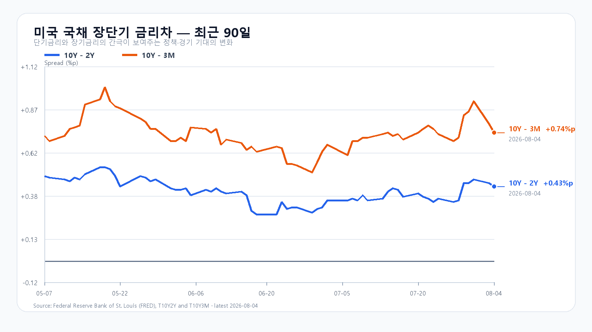
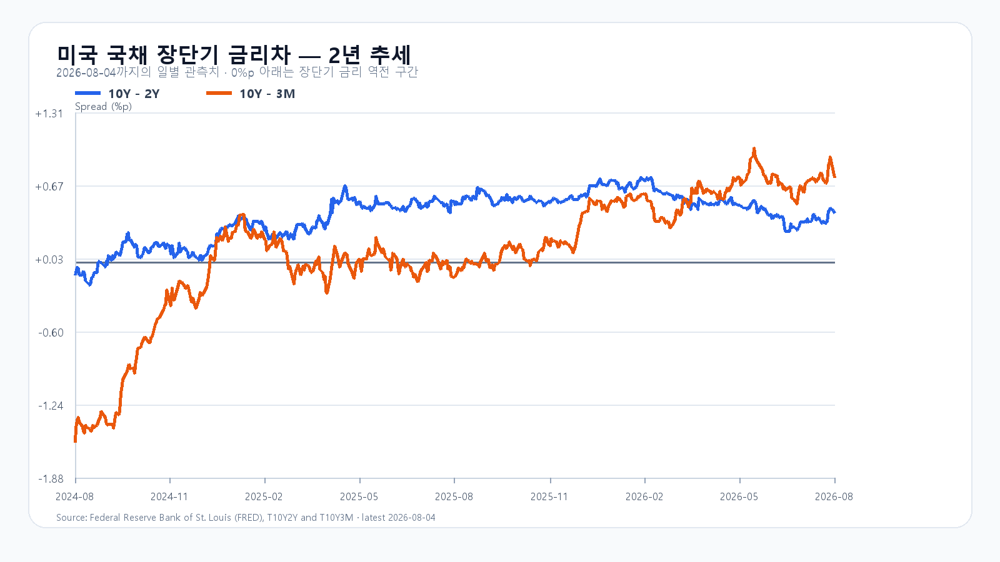

오늘의 한 문장
미국 반도체 전면 반등과 유가·국채금리 하락이 한국 반도체에 강한 갭상승을 만들었습니다. 다만 AMD의 시간외 9% 급락과 국내 기관 매도는 정규장의 흥분을 낮추고 있습니다. 6,650을 넘어선 뒤에도 외국인 매수와 시장 폭이 유지되는지가 오늘 반등의 질을 가릅니다.
KOSPI는 6,603.48로 출발해 6,658.44까지 올랐고 09시 29분에는 6,639.50을 기록했습니다. 상승 종목은 752개, 하락 종목은 115개였습니다. KOSDAQ은 09시 28분 802.18로 2.75% 올랐고 상승 종목 1,403개가 하락 251개를 크게 웃돌았습니다.
반등의 폭은 이미 강합니다. 이제 필요한 것은 6,650 위에서도 매수세가 넓고 오래 남는 모습입니다.
6,600 위로 뛰어오른 개장
KOSPI는 미국 반도체 급등을 한꺼번에 반영하며 4%대 상승으로 출발했습니다. 삼성전자는 25만500원, SK하이닉스는 169만1,000원입니다. KODEX 레버리지는 9.70% 상승했습니다.
| 항목 | 현재 | 시가 / 고가 / 저가 |
|---|---|---|
| KOSPI | 6,639.50 · +4.41% | 6,603.48 / 6,658.44 / 6,591.06 |
| 삼성전자 | 250,500원 · +4.38% | 250,000 / 254,500 / 248,000 |
| SK하이닉스 | 1,691,000원 · +7.23% | 1,652,000 / 1,696,000 / 1,652,000 |
| KODEX 레버리지 | 104,585원 · +9.70% | 104,000 / 105,185 / 102,905 |
| KOSDAQ | 802.18 · +2.75% | 상승 1,403 / 하락 251 / 보합 65 |
| 달러/원 | 1,427.80원 · -0.22% | 09:27 KST |
삼성전자와 SK하이닉스가 함께 오른 점은 전날의 중소형주 중심 반등과 다릅니다. 오늘은 지수 비중이 큰 반도체가 상승의 중심에 섰고, 동시에 KOSPI와 KOSDAQ의 상승 종목 수도 넓게 퍼졌습니다.
외국인 매수와 프로그램의 힘
외국인은 개장 초반 KOSPI 현물을 3,272억원, 기관은 979억원 순매수했습니다. 개인은 4,051억원을 순매도했습니다. 외국인에 이어 기관까지 매수로 돌아섰고 비차익 프로그램 매수도 유지돼 갭상승의 수급 기반이 넓어졌습니다.
| 구분 | 순매매 | 시장 의미 |
|---|---|---|
| 외국인 | +3,272억원 | 반도체 중심 갭상승을 지지 |
| 기관 | +979억원 | 개장 직후 매도에서 순매수로 전환 |
| 개인 | -4,051억원 | 반등을 이용한 매물 출회 |
| 프로그램 차익 | +169억원 | 선물·현물 연계 매수 전환 |
| 프로그램 비차익 | +1,760억원 | 지수 바스켓 매수 유지 |
| 프로그램 전체 | +1,929억원 | 초반 상승의 수급 완충재 |
프로그램은 차익 매도보다 비차익 매수가 더 컸습니다. 외국인 현물과 비차익 프로그램의 동반 매수는 오늘 반등을 떠받치는 가장 중요한 조합입니다. 반대로 기관 매도가 커지고 비차익 매수가 줄면 6,650 부근에서 상승 탄력이 빠르게 둔화할 수 있습니다.
미국 반도체는 7% 뛰었지만 AMD는 반전
8월 4일 미국장은 AI 관련 실적 기대와 유가·국채금리 하락이 함께 만든 전면 반등이었습니다. S&P 500은 1.79%, Nasdaq은 2.59%, Dow는 1.71% 올랐습니다. 반도체 업종은 시장보다 훨씬 강했습니다.
| 자산 | 마감 | 장중 흐름 |
|---|---|---|
| QQQ | $723.85 · +3.40% | 고가 대비 0.25% 아래 마감 |
| SOXX | $542.10 · +6.78% | 고가 대비 0.60% 아래 마감 |
| SMH | $575.71 · +5.55% | 고가 대비 0.50% 아래 마감 |
| Nvidia | $211.94 · +2.56% | 고가 $213.06 |
| AMD | $518.58 · +7.00% | 시간외 $471.50 · -9.08% |
| Micron | $892.45 · +7.59% | 고가 $902.43 |
| Broadcom | $418.08 · +6.59% | 고가 $422.07 |
SOXX와 SMH는 장중 고점 가까이에서 마감했습니다. Nvidia 한 종목에 기대지 않고 Micron·Broadcom·AMD까지 함께 오른 폭넓은 반등이었습니다. 뉴욕증권거래소와 Nasdaq 모두 상승 종목이 하락 종목보다 2.8배 이상 많았습니다.
그러나 AMD는 실적 발표 뒤 시간외에서 9.08% 하락했습니다. 2분기 조정 EPS는 1.66달러, 매출은 115억달러로 예상치를 웃돌았고 데이터센터 매출도 67억달러로 기대보다 강했습니다. 3분기 매출 전망 역시 127억~133억달러로 시장 예상 125억달러를 넘었습니다. 좋은 숫자에도 주가가 돌아선 것은 이미 높아진 기대와 수익성 눈높이가 더 높았다는 뜻입니다.
메모리 공급 부족과 주가의 시간차
TrendForce가 8월 4일 저녁 공개한 DRAM 현물가에서 DDR5 16Gb는 51.333달러로 보합을 지켰고 DDR4 16Gb는 85.951달러로 0.29% 올랐습니다. DDR5 eTT와 DDR3도 소폭 상승했습니다.
| 품목 | 평균가 | 당일 |
|---|---|---|
| DDR5 16Gb 4800/5600 | $51.333 | 보합 |
| DDR4 16Gb 3200 | $85.951 | +0.29% |
| DDR4 8Gb 3200 | $42.112 | 보합 |
| DDR3 4Gb | $13.867 | +0.21% |
미국 7월 ISM 제조업 보고서의 부족 품목에도 메모리가 7개월, 전자부품이 17개월, 반도체가 5개월 연속 포함됐습니다. Micron이 정규장에서 7.59% 오른 흐름도 같은 공급 제약을 가격에 반영했습니다.
삼성전자는 주요 글로벌 데이터센터 고객 5곳과 장기공급계약을 확보했고 추가 고객과 협상을 이어가고 있습니다. 생산능력의 상당 부분이 장기계약으로 묶이는 흐름은 2027년 공급 부족이 더 심해질 수 있다는 회사 전망과 맞물립니다. Broadcom과의 협력도 메모리와 파운드리를 함께 다루는 MOU로 확대됐습니다.
오늘 시장은 메모리 수요와 주가 기대치를 분리해 보고 있습니다. 실물 공급은 빠듯하지만 AMD 시간외 급락이 보여주듯, 주가는 좋은 수요만으로 오르지 않습니다. 높은 이익 전망을 다시 넘어서는 실적과 마진이 필요합니다.
유가·고용·국채금리
국제유가는 이란 관련 긴장 완화 기대에 5~6% 급락했고 미국 10년물 국채금리는 4.70% 부근에서 4.62% 안팎으로 내려왔습니다. 반도체의 할인율 부담이 함께 낮아지면서 정규장 상승폭이 커졌습니다.
미국 6월 무역적자는 733억달러로 5월 776억달러보다 줄었습니다. 수출은 3,147억달러, 수입은 3,880억달러였습니다. 수입이 더 크게 감소해 적자가 좁아졌다는 점은 달러에는 안정 요인이지만 성장에는 마냥 강한 신호가 아닙니다.
6월 JOLTS 구인은 735만9천건으로 예상 744만건과 이전 753만7천건을 밑돌았습니다. 채용은 530만건, 자발적 퇴직은 320만건, 해고는 180만건이었습니다. 노동수요가 식고 있지만 급격한 침체로 번지지 않은 결과가 국채금리 하락과 주식 반등을 함께 도왔습니다.
공장주문은 전월 대비 0.3% 줄어 0.2% 증가 예상에 못 미쳤고, 운송 제외 주문도 0.4% 감소했습니다. 경기 급락보다 제조업 수요의 완만한 냉각이 금리 부담을 낮춘 밤이었습니다.


오늘 밤부터 볼 일정
| 한국시간 | 일정 | 확인할 것 |
|---|---|---|
| 8/5 21:15 | 미국 ADP 민간고용 | 금요일 고용보고서 전 노동수요 |
| 8/5 22:45 | 미국 7월 서비스 PMI 확정 | 서비스 경기의 확장 속도 |
| 8/5 23:00 | 미국 7월 ISM 서비스업 | 서비스 물가·고용과 국채금리 |
| 8/6 08:00 | 한국 6월 국제수지 | 원화와 반도체 수출 |
| 8/7 21:30 | 미국 7월 고용보고서 | 임금·실업률과 10년물 방향 |
오늘 밤 ISM 서비스업이 적당한 확장과 물가 둔화를 함께 보여주면 미국 반도체 반등의 금리 환경이 이어질 수 있습니다. 반대로 서비스 물가와 고용이 동시에 강하면 10년물 금리가 다시 오르며 AMD 시간외 하락의 부담을 키울 수 있습니다.
오늘 시나리오와 기준선
미국 반도체 급등과 외국인·비차익 매수가 하단을 받치지만 AMD 시간외 하락과 기관 매도가 6,650 부근의 상단을 제한합니다.
6,650 위에서 외국인 현물·선물 매수가 이어지고 기관 매도가 줄어야 합니다. 돌파 직후 다시 6,650 아래로 밀리면 강세 조건은 약해집니다.
외국인이 순매도로 돌아서고 삼성전자·SK하이닉스가 시가를 잃으면 열립니다. 6,500 이탈은 갭상승분의 빠른 반납 신호입니다.
KODEX 레버리지는 102,905원이 개장 초반 저점이자 첫 지지, 104,000원이 시가, 104,585원이 09시 29분 현재가, 105,185원이 장중 첫 저항입니다. 105,185원을 넘어설 때도 외국인·기관 현물 매수와 비차익 프로그램 매수가 함께 유지돼야 상승의 신뢰도가 높아집니다.
오늘 판단은 공격 45, 관망 45, 방어 10입니다. 반도체와 시장 폭은 강하지만 AMD 시간외 급락과 기관 매도가 추격의 속도를 조절하고 있습니다.
자료 기준
한국 시세와 수급은 Naver Finance의 8월 5일 09:27~09:29 KST 장중값, 미국 주가는 8월 4일 정규장 마감과 AMD 시간외 시세, 메모리 현물가는 TrendForce, 공급 상황은 ISM과 삼성전자 자료, 무역수지는 미국 Census·BEA, 고용은 BLS 자료를 사용했습니다. 세부 수치와 조건별 전망은 개장 초반 리서치 보고서에서 볼 수 있습니다.